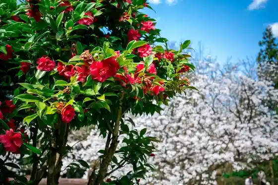
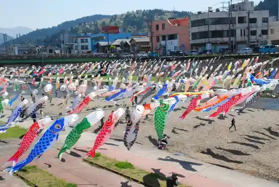
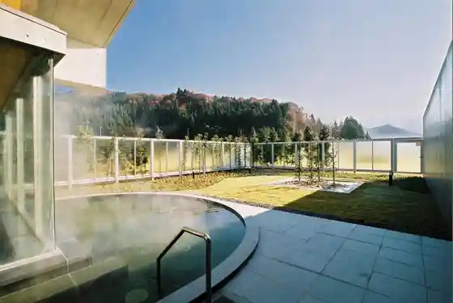
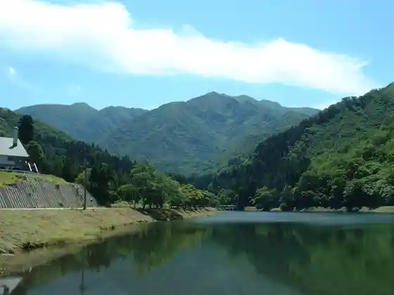

Kamo Yama Park
Kamo, Niigata · 0256-52-0080 · Official / source link

Kamo Kawa Wo Oyogu Koi no Bori
Kamo, Niigata · 0256-52-0080 · Official / source link

Kamo Shichi Tani Onsen Bijin Baths
Kamo, Niigata · 0256-41-4122 · Official / source link

Seikai Shrine
Kamo, Niigata · 0256-52-0671 · Official / source link
Awagagaku Kenmin Kyuyochi
Kamo, Niigata · 0256-52-0080 · Official / source link

Kamo Folk Museum
Kamo, Niigata · 0256-52-0089 · Official / source link
Shimojo Kawa Dam
Kamo, Niigata · 0256-52-0080 · Official / source link
Fuyudori Etsu Sukii Garden
Kamo, Niigata · 0256-53-6020 · Official / source link
Awagagaku Chuo Tozando
Kamo, Niigata · 0256-52-0080 · Official / source link
Sumiyaki Ki Experience
Kamo, Niigata · 0256-52-0080 · Official / source link
Niigata no Do Mannaka De Ajiwa U ! Noka no Donabe Go Meshi to Nogyo Experience
Kamo, Niigata · 025-333-9555 · Official / source link
Shimojo Kawa Damu Ryokuchi
Kamo, Niigata · 0256-52-0080 · Official / source link
Shimojo Kawa Dam
Kamo, Niigata · 0256-52-0080 · Official / source link
Kiyokumo Tei Yama Ju
Kamo, Niigata · 0256-52-0104 · Official / source link
Ii Ofisu Kamo by Oyanagi Kensetsu
Kamo, Niigata · 0256-52-0008 · Official / source link
Kamo Sangyo Center
Kamo, Niigata · 0256-53-3450 · Official / source link
(Kabu) Masukagami / (Manju Kagami)
Kamo, Niigata · 0256-52-0041 · Official / source link
Shimojo Kawa Dam
Kamo, Niigata · 0256-52-0080 · Official / source link
Kamo no Dentokogei Byobu no Seisakugemba Wo Kengaku
Kamo, Niigata · 0256-52-0040 · Official / source link
Yukitsubaki no Hanabira Some
Kamo, Niigata · 0256-52-1740 · Official / source link
Kamo Kiri Tansu
Kamo, Niigata · 0256-52-0445 · Official / source link
Jinrikisha De Meguru Hokuetsu no Shokyoto Kamo no Streetscape Womeguru Jinrikisha Josha Experience
Kamo, Niigata · 0256-52-0104 · Official / source link
Nagase Shrine
Kamo, Niigata · 0256-52-3101 · Official / source link
Fuyudori Etsu Sukii Garden (Tamokuteki Plaza)
Kamo, Niigata · 0256-53-6020 · Official / source link
Awagagaku Kenmin Kyuyochi
Kamo, Niigata · 0256-52-0080 · Official / source link
Kamo Shima
Kamo, Niigata · 0256-52-0080 · Official / source link